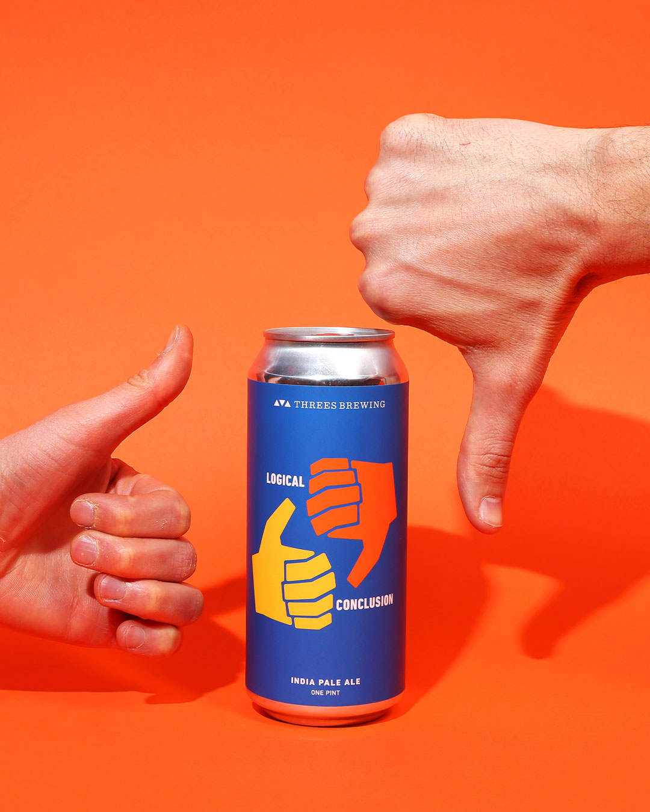

HOME
IPAs
Logical Conclusion IPA
Threes Brewing Co.
This hoppy American Ale is bursting with notes of ripe peach, gushers, fluffy wheat, coniferous and white minerals. It's made with citra, simcoe and mosaic hops to give you that extra hoppy flavor.
Threes Brewing is a Brooklyn-based brewery known for crafting approachable beers that balance simplicity and complexity, with a focus on lagers, hop-forward American ales and mixed culture beers. In addition to selling beer in over 150 bars, restaurants and shops across New York State, Threes Brewing runs a non-traditional tap room and event space in Gowanus, a sister bar and event space in Greenpoint, and a seasonal outpost on Governors Island, in the New York Harbor.
Check out their site HERE 